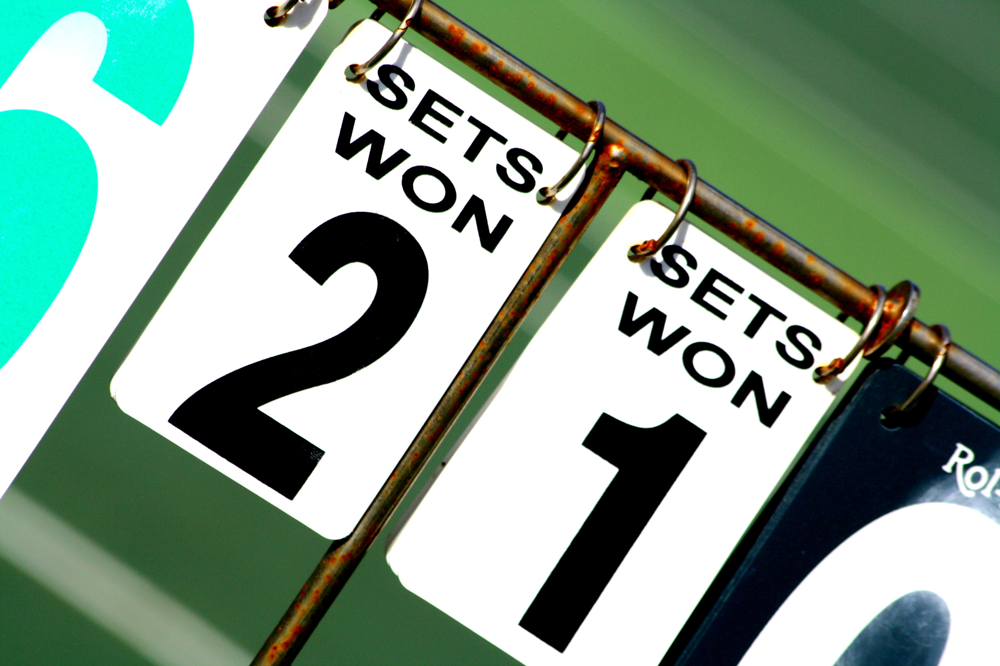
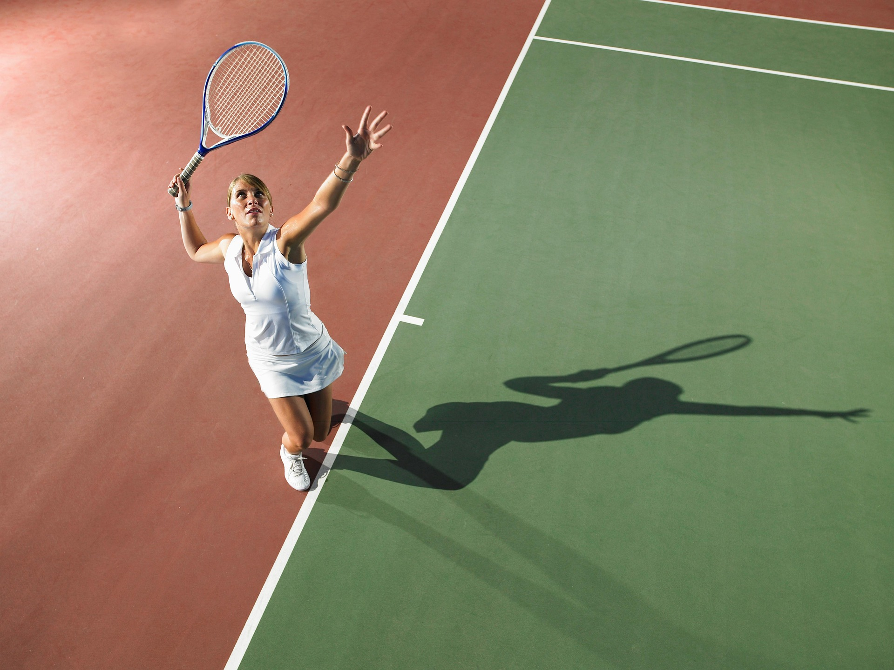
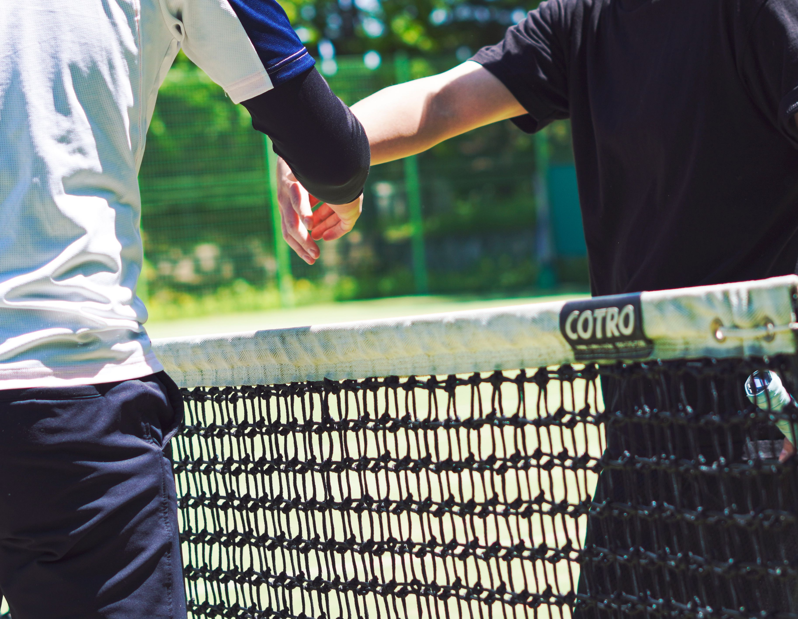

Basic idea and fundamentals
The basic rules of tennis require players to hit the ball over the net into the opponent's court, ensuring it bounces no more than once before being returned.
- Lines are in:
If any part of the ball touches any part of the boundary line, it is considered in. - Net touch:
Players, their rackets, and clothing cannot touch the net or posts while the ball is alive in play. Doing so immediately forfeits the point.
Unique scoring system
A tennis match uses a distinct terminology for counting points within an individual game.
- 0 points is called "love"
- 1 point is called "15"
- 2 points is called "30"
- 3 points is called "40"
- 4 points wins the game, provided the player has a 2-point lead
Deuce (40–40): If the score is tied at 40–40, a player must win two consecutive points to secure the game. The first point won after deuce gives that player the Advantage (Ad). If they win the next point, they win the game; if they lose it, the score returns to deuce.

Serving the ball
- Diagonal Delivery:
The server stands behind the baseline and must hit the ball diagonally into the opponent's opposite service box. - Two Attempts:
The server gets two chances per point. Missing the first is a fault. Missing both is a double fault, awarding the point to the receiver. - Let:
If a serve hits the net cord but still lands inside the correct service box, it is a let and the serve is replayed without penalty.

Winning sets and matches
- Winning a Set:
To win a set, a player must win at least 6 games and lead by a margin of at least 2 games (e.g., 6–4). If the score reaches a 6–6 tie, a standard tie-break game is played to determine the set winner. - Winning a Match:
Matches are typically played as a best-of-three sets structure (the first to win 2 sets wins), though men's Grand Slam tournaments use a best-of-five format.
Tennis is a sport that requires good sportsmanship
Good sportsmanship is an essential part of tennis. Players are expected to show respect for their opponents, the umpire, and the game itself. This includes following the rules, maintaining a positive attitude, and conducting oneself with integrity.
Tennis also has a lot of unwritten rules and etiquette that players are expected to follow. Players learn these rules and etiquette through experience and observation, but if you are interested in learning more about them, you can follow this link.

For more detailed information about the rules
For a comprehensive understanding of tennis rules, including specific regulations for doubles play, scoring nuances, and official guidelines, please refer to the official rules provided by the International Tennis Federation (ITF) from the link below.